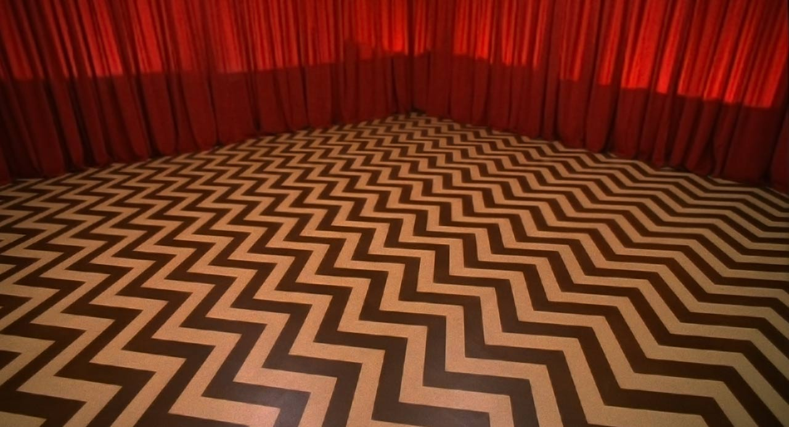

2017
Twin Peaks: The Return
Veinticinco años después, el relato abandona cualquier comodidad.
Ficción, realidad
18 partes. Emitida entre mayo y septiembre de 2017 en Showtime (primera emisión fuera de ABC).
Dirigida íntegramente por David Lynch. El espacio de la narrativa se expande: ya no solo Twin Peaks, sino Las Vegas, Nueva York, Dakota del Sur. El formato es radicalmente distinto al original: mucho más lento, más visual, más Lynch sin compropisos de ABC.
| Año | 2017 |
|---|---|
| Partes | 18 |
| Duración aproximada | 55 min por parte (promedio) |
| Centro narrativo | El retorno y sus ecos |
| Tono | Onírico, experimental, meditativo |
Las 18 partes
- Parte 1
Part 1
Cooper sigue atrapado en la Logia Negra mientras en Twin Peaks aparecen nuevas pistas y un asesinato inexplicable sacude Nueva York.
- Parte 2
Part 2
Un doble siniestro de Cooper maneja sus propios planes en el mundo real mientras el verdadero Cooper busca la manera de salir de la Logia Negra.
- Parte 3
Part 3
Liberado de la Logia Negra pero sin memoria, Cooper cae en la vida de un desconocido en Las Vegas.
- Parte 4
Part 4
Cooper, todavía desorientado, empieza a adaptarse por error a una vida y una familia que no son suyas.
- Parte 5
Part 5
Mientras el FBI reabre el caso, el doble de Cooper se enfrenta a sus propios cómplices y a la sombra de Bob.
- Parte 6
Part 6
Un asesinato a sueldo y un accidente fatal en la ruta se cruzan mientras Cooper sigue sin recordar quién es.
- Parte 7
Part 7
Antiguas pistas del caso de Laura Palmer resurgen justo cuando el FBI empieza a dudar de la identidad de Cooper.
- Parte 8
Part 8
Un capítulo casi sin diálogo revela el origen del mal que habita en Twin Peaks, remontándose a la primera prueba nuclear.
- Parte 9
Part 9
El FBI avanza en la investigación mientras el doble de Cooper ordena nuevos golpes para protegerse.
- Parte 10
Part 10
Nuevas pistas conectan a Cooper con el pasado, mientras el pueblo sigue lidiando con sus propios conflictos.
- Parte 11
Part 11
La violencia se desata en el pueblo mientras el FBI se acerca cada vez más a la verdad sobre Cooper.
- Parte 12
Part 12
El círculo se cierra alrededor del doble de Cooper mientras el pueblo enfrenta sus propios fantasmas.
- Parte 13
Part 13
Un enfrentamiento brutal marca el rumbo del doble de Cooper mientras el verdadero sigue sin recuperar su identidad.
- Parte 14
Part 14
Viejas conexiones familiares y nuevas pistas sobrenaturales empiezan a develar el misterio de "los dos Cooper".
- Parte 15
Part 15
Despedidas, reconciliaciones y una tragedia marcan este capítulo mientras la Log Lady se despide para siempre.
- Parte 16
Part 16
Cooper finalmente recupera su memoria justo cuando todas las piezas empiezan a moverse hacia el final.
- Parte 17
Part 17
El verdadero Cooper regresa a Twin Peaks para enfrentar a su doble en un clímax que cambia el pasado.
- Parte 18
Part 18
El final de la serie lleva a Cooper a un viaje entre líneas de tiempo, cerrando (o abriendo) el misterio de Twin Peaks para siempre.